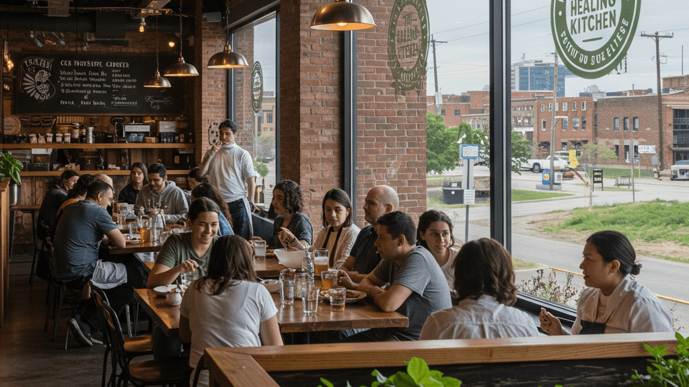
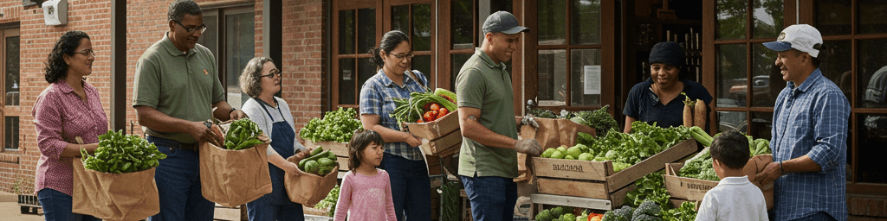

We believe in farming practices that regenerate the soil, conserve water, and protect biodiversity. Our commitment to the environment ensures that future generations will inherit healthier land and a more sustainable food system.

Community Connection
Food is about more than nutrition—it's about bringing people together. We create opportunities for our community to connect with their food source, learn about sustainable practices, and build relationships around shared meals.

Food Access & Equity
Everyone deserves access to fresh, healthy food. Through our community programs and profit-sharing initiatives, we work to eliminate food insecurity and ensure nutritious meals reach those who need them most.